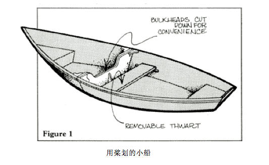
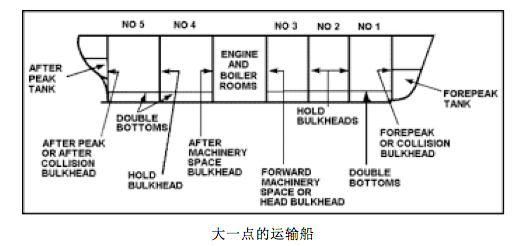
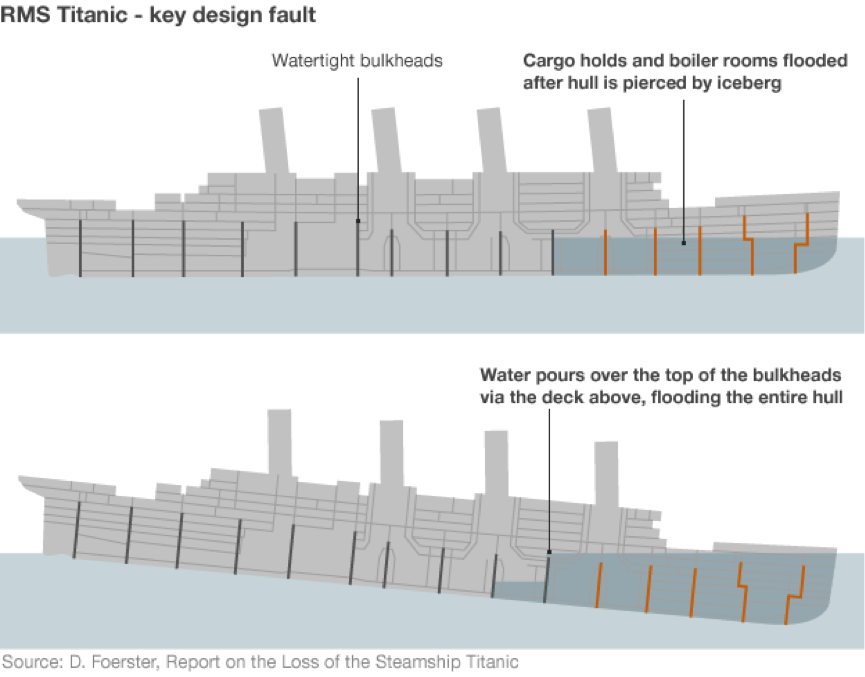
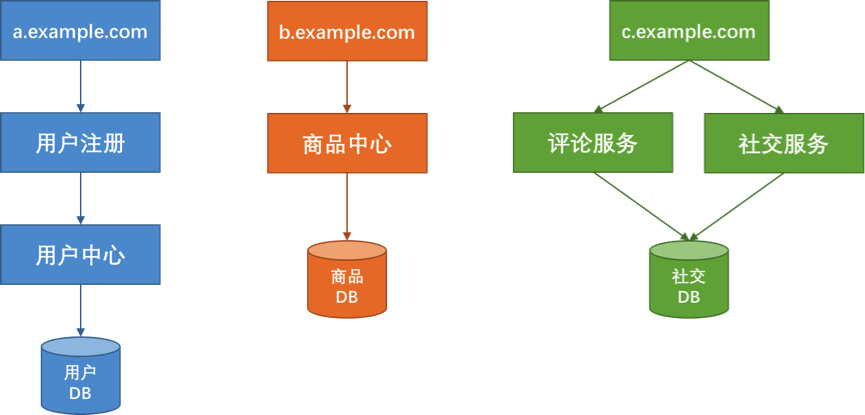
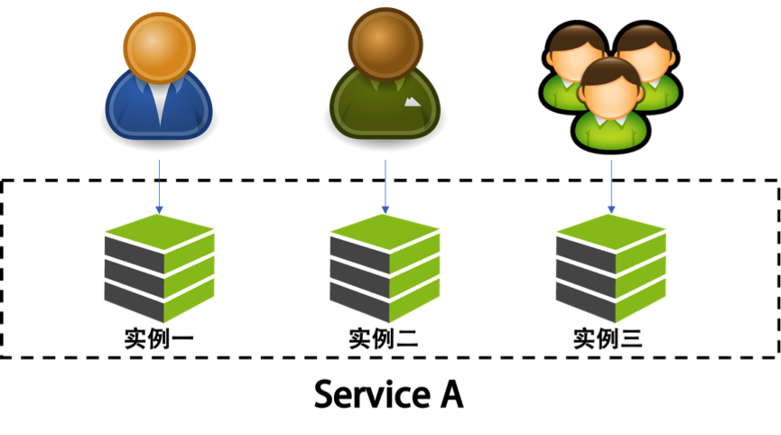
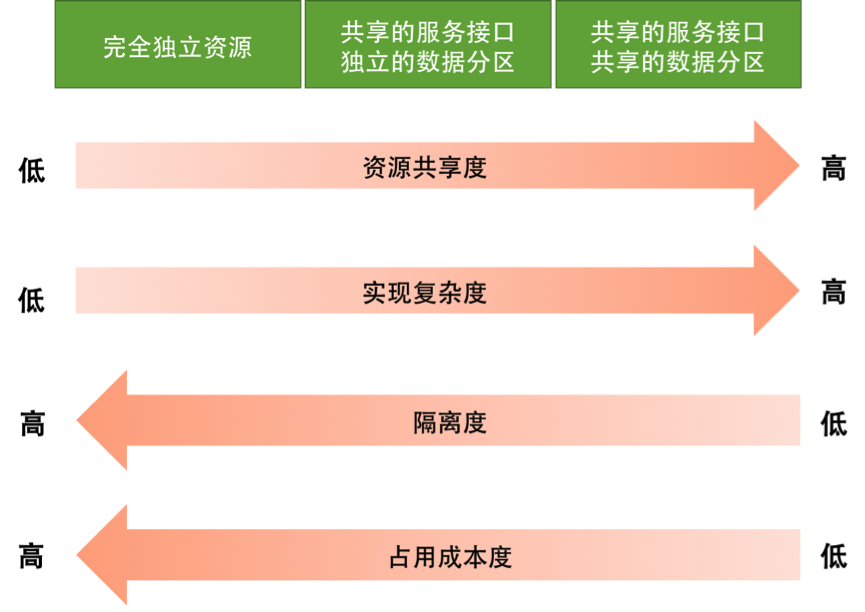

- 000 开篇词 洞悉技术的本质，享受科技的乐趣.md
- 001 程序员如何用技术变现（上）.md
- 002 程序员如何用技术变现（下）.md
- 003 Equifax信息泄露始末.md
- 004 从Equifax信息泄露看数据安全.md
- 005 何为技术领导力.md
- 006 如何拥有技术领导力.md
- 007 推荐阅读：每个程序员都该知道的事.md
- 008 Go语言，Docker和新技术.md
- 009 答疑解惑：渴望、热情和选择.md
- 010 如何成为一个大家愿意追随的Leader？.md
- 011 程序中的错误处理：错误返回码和异常捕捉.md
- 012 程序中的错误处理：异步编程和最佳实践.md
- 013 魔数 0x5f3759df.md
- 014 推荐阅读：机器学习101.md
- 015 时间管理：同扭曲时间的事儿抗争.md
- 016 时间管理：投资赚取时间.md
- 017 故障处理最佳实践：应对故障.md
- 018 故障处理最佳实践：故障改进.md
- 019 答疑解惑：我们应该能够识别的表象和本质.md
- 020 分布式系统架构的冰与火.md
- 021 从亚马逊的实践，谈分布式系统的难点.md
- 022 分布式系统的技术栈.md
- 023 分布式系统关键技术：全栈监控.md
- 024 分布式系统关键技术：服务调度.md
- 025 分布式系统关键技术：流量与数据调度.md
- 026 洞悉PaaS平台的本质.md
- 027 推荐阅读：分布式系统架构经典资料.md
- 028 编程范式游记（1）- 起源.md
- 029 编程范式游记（2）- 泛型编程.md
- 030 编程范式游记（3） - 类型系统和泛型的本质.md
- 031 Git协同工作流，你该怎样选.md
- 032 推荐阅读：分布式数据调度相关论文.md
- 033 编程范式游记（4）- 函数式编程.md
- 034 编程范式游记（5）- 修饰器模式.md
- 035 编程范式游记（6）- 面向对象编程.md
- 036 编程范式游记（7）- 基于原型的编程范式.md
- 037 编程范式游记（8）- Go 语言的委托模式.md
- 038 编程范式游记（9）- 编程的本质.md
- 039 编程范式游记（10）- 逻辑编程范式.md
- 040 编程范式游记（11）- 程序世界里的编程范式.md
- 041 弹力设计篇之“认识故障和弹力设计”.md
- 042 弹力设计篇之“隔离设计”.md
- 043 弹力设计篇之“异步通讯设计”.md
- 044 弹力设计篇之“幂等性设计”.md
- 045 弹力设计篇之“服务的状态”.md
- 046 弹力设计篇之“补偿事务”.md
- 047 弹力设计篇之“重试设计”.md
- 048 弹力设计篇之“熔断设计”.md
- 049 弹力设计篇之“限流设计”.md
- 050 弹力设计篇之“降级设计”.md
- 051 弹力设计篇之“弹力设计总结”.md
- 052 区块链技术 - 区块链的革命性及技术概要.md
- 053 区块链技术 - 区块链技术细节 - 哈希算法.md
- 054 区块链技术 - 区块链技术细节 - 加密和挖矿.md
- 055 区块链技术 - 去中心化的共识机制.md
- 056 区块链技术 - 智能合约.md
- 057 区块链技术 - 传统金融和虚拟货币.md
- 058 管理设计篇之分布式锁.md
- 059 管理设计篇之配置中心.md
- 060 管理设计篇之边车模式.md
- 061 管理设计篇之服务网格.md
- 062 管理设计篇之网关模式.md
- 063 管理设计篇之部署升级策略.md
- 064 性能设计篇之缓存.md
- 065 性能设计篇之异步处理.md
- 066 性能设计篇之数据库扩展.md
- 067 性能设计篇之秒杀.md
- 068 性能设计篇之边缘计算.md
- 069 程序员练级攻略（2018）：开篇词.md
- 070 程序员练级攻略（2018）：零基础启蒙.md
- 071 程序员练级攻略（2018）：正式入门.md
- 072 程序员练级攻略（2018）：程序员修养.md
- 073 程序员练级攻略（2018）：编程语言.md
- 074 程序员练级攻略：理论学科.md
- 075 程序员练级攻略（2018）：系统知识.md
- 076 程序员练级攻略（2018）：软件设计.md
- 077 程序员练级攻略（2018）：Linux系统、内存和网络.md
- 078 程序员练级攻略（2018）：异步IO模型和Lock-Free编程.md
- 079 程序员练级攻略（2018）：Java底层知识.md
- 080 程序员练级攻略（2018）：数据库.md
- 081 程序员练级攻略（2018）：分布式架构入门.md
- 082 程序员练级攻略（2018）：分布式架构经典图书和论文.md
- 083 程序员练级攻略（2018）：分布式架构工程设计.md
- 084 程序员练级攻略（2018）：微服务.md
- 085 程序员练级攻略（2018）：容器化和自动化运维.md
- 086 程序员练级攻略（2018）：机器学习和人工智能.md
- 087 程序员练级攻略（2018）：前端基础和底层原理.md
- 088 程序员练级攻略（2018）：前端性能优化和框架.md
- 089 程序员练级攻略（2018）：UIUX设计.md
- 090 程序员练级攻略（2018）：技术资源集散地.md
- 091 程序员面试攻略：面试前的准备.md
- 092 程序员面试攻略：面试中的技巧.md
- 093 程序员面试攻略：面试风格.md
- 094 程序员面试攻略：实力才是王中王.md
- 095 高效学习：端正学习态度.md
- 096 高效学习：源头、原理和知识地图.md
- 097 高效学习：深度，归纳和坚持实践.md
- 098 高效学习：如何学习和阅读代码.md
- 099 高效学习：面对枯燥和量大的知识.md
- 100 高效沟通：Talk和Code同等重要.md
- 101 高效沟通：沟通阻碍和应对方法.md
- 102 高效沟通：沟通方式及技巧.md
- 103 高效沟通：沟通技术.md
- 104 高效沟通：好老板要善于提问.md
- 105 高效沟通：好好说话的艺术.md
- 106 加餐 谈谈我的“三观”.md
- 107 结束语 业精于勤，行成于思.md
042 弹力设计篇之“隔离设计”
隔离设计对应的单词是 Bulkheads，中文翻译为隔板。但其实，这个术语是用在造船上的，也就是船舱里防漏水的隔板。一般的船无论大小都会有这个东西，大一点的船都会把船舱隔成若干个空间。这样，如果船舱漏水，只会进到一个小空间里，不会让整个船舱都进水而导致整艘船都沉了，如下图所示。


我们的软件设计当然也“漏水”，所以为了不让这个“故障”蔓延开来，需要使用“隔板”技术，来将架构分隔成多个“船舱”来隔离故障。
多扯一句，著名的泰坦尼克号也有 Bulkheads 设计，然而其设计上有个缺陷。如下图所示，当其撞上冰山漏水时，因为船体倾斜，导到水漫过了隔板，从而下沉了。

在分布式软件架构中，我们同样需要使用类似这样的技术来让我们的故障得到隔离。这就需要我们对系统进行分离。一般来说，对于系统的分离有两种方式，一种是以服务的种类来做分离，一种是以用户来做分离。下面具体说明一下这两种方式。
按服务的种类来做分离
下面这个图中，说明了按服务种类来做分离的情况。

上图中，我们将系统分成了用户、商品、社区三个版块。三个板块分别使用不同的域名、服务器和数据库，做到从接入层到应用层再到数据层三层完全隔离。这样一来，在物理上来说，一个版块的故障就不会影响到另一版块。
在亚马逊，每个服务都有自己的一个数据库，每个数据库中都保存着和这个业务相关的数据和相应的处理状态。而每个服务从一开始就准备好了对外暴露。同时，这也是微服务所推荐的架构方式。
然而任何架构都有其好和不好的地方，上面这种架构虽然在系统隔离上做得比较好，但是也存在以下一些问题。
- 如果我们需要同时获得多个版块的数据，那么就需要调用多个服务，这会降低性能。注意，这里性能降低指的是响应时间，而不是吞吐量（相反，在这种架构下，吞吐量可以得到提高）。
对于这样的问题，一般来说，我们需要小心地设计用户交互，最好不要让用户在一个页面上获得所有的数据。对于目前的手机端上来说，因为手机屏幕尺寸比较小，所以，也不可能在一个屏幕页上展示太多的内容。
- 如果有大数据平台，就需要把这些数据都抽取到一个数据仓库中进行计算，这也增加了数据合并的复杂度。对于这个问题，我们需要一个框架或是一个中间件来对数据进行相应的抽取。
- 另外，如果我们的业务逻辑或是业务流程需要跨版块的话，那么一个版块的故障也会导致整个流程走不下去，同样会导致整体业务故障。
对于这个问题，一方面，我们需要保证这个业务流程中各个子系统的高可用性，并且在业务流程上做成 Step-by-Step 的方式，这样用户交互的每一步都可以保存，以便故障恢复后可以继续执行，而不是从头执行。
- 还有，如果需要有跨版块的交互也会变得有点复杂。对此我们需要一个类似于 Pub/Sub 的高可用的并可以持久化的消息订阅通知的中间件来打通各个版块的数据和信息交换。
- 最后还会有在多个版块中分布式事务的问题。对此，我们需要“二阶段提交”这样的方案。在亚马逊中，使用的是 Plan – Reserve – Commit/Cancel 模式。
也就是说，先做一个 plan 的 API 调用，然后各个子系统 reserve 住相应的资源，如果成功，则 Commit；如果有一个失败，则整体 Cancel。这其实很像阿里的 TCC – try confirm/cancel。
可见，隔离了的系统在具体的业务场景中还是有很多问题的，是需要我们小心和处理的。对此，我们不可掉以轻心。根据我的经验，这样的系统通常会引入大量的异步处理模型。
按用户的请求来做分离
下图是一个按用户请求来做分离的图示。

在这个图中，可以看到，我们将用户分成不同的组，并把后端的同一个服务根据这些不同的组分成不同的实例。让同一个服务对于不同的用户进行冗余和隔离，这样一来，当服务实例挂掉时，只会影响其中一部分用户，而不会导致所有的用户无法访问。
这种分离和上面按功能的分离可以融合。说白了，这就是所谓的“多租户”模式。对于一些比较大的客户，我们可以为他们设置专门独立的服务实例，或是服务集群与其他客户隔离开来，对于一些比较小的用户来说，可以让他们共享一个服务实例，这样可以节省相关的资源。
对于“多租户”的架构来说，会引入一些系统设计的复杂度。一方面，如果完全隔离，资源使用上会比较浪费，如果共享，又会导致程序设计的一些复杂度。
通常来说多租户的做法有三种。
- 完全独立的设计。每个租户有自己完全独立的服务和数据。
- 独立的数据分区，共享的服务。多租户的服务是共享的，但数据是分开隔离的。
- 共享的服务，共享的数据分区。每个租户的数据和服务都是共享的。
这三种方案各有优缺点，如图所示。

通过上图，可以看到：
- 如果使用完全独立的方案，在开发实现上和资源隔离度方面会非常好，然而，成本会比较高，计算资源也会有一定的浪费。
- 如果使用完全共享的方案，在资源利用和成本上会非常好，然而，开发难度非常大，而且数据和资源隔离非常不好。
所以，一般来说，技术方案会使用折衷方案，也就是中间方案，服务是共享的，数据通过分区来隔离，而对于一些比较重要的租户（需要好的隔离性），则使用完全独立的方式。
然而，在虚拟化技术非常成熟的今天，我们完全可以使用“完全独立”（完全隔离）的方案，通过底层的虚拟化技术（Hypervisor 的技术，如 KVM，或是 Linux Container 的技术，如 Docker）来实现物理资源的共享和成本的节约。
隔离设计的重点
要能做好隔离设计，我们需要有如下的一些设计考量。
- 我们需要定义好隔离业务的大小和粒度，过大和过小都不好。这需要认真地做业务上的需求和系统分析。
- 无论是做系统版块还是多租户的隔离，你都需要考虑系统的复杂度、成本、性能、资源使用的问题，找到一个合适的均衡方案，或是分布实施的方案尤其重要，这其中需要你定义好要什么和不要什么。因为，我们不可能做出一个什么都能满足的系统。
- 隔离模式需要配置一些高可用、重试、异步、消息中间件，流控、熔断等设计模式的方式配套使用。
- 不要忘记了分布式系统中的运维的复杂度的提升，要能驾驭得好的话，还需要很多自动化运维的工具，尤其是使用像容器或是虚拟机这样的虚拟化技术可以帮助我们更方便地管理，和对比资源更好地利用。否则做出来了也管理不好。
- 最后，你需要一个非常完整的能够看得到所有服务的监控系统，这点非常重要。
小结
好了，我们来总结一下今天分享的主要内容。首先，我从船体水密舱的设计，引出了分布式系统设计中的隔离设计。然后我介绍了常见的隔离有两种，一种是按服务种类隔离，另一种是按用户隔离（即多租户）。下篇文章中，我们讲述异步通讯设计。希望对你有帮助。
也欢迎你分享一下你是如何为分布式系统做隔离设计的。
© 2019 - 2023 Liangliang Lee. Powered by gin and hexo-theme-book.